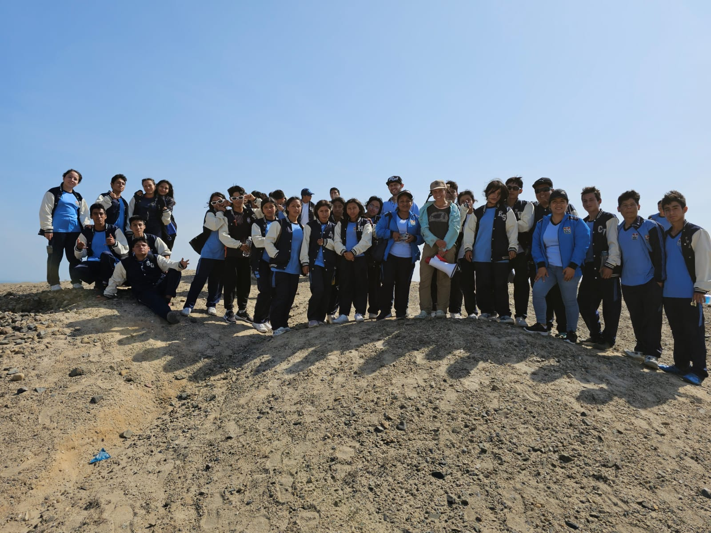

¿QUIÉNES SOMOS?
Somos la IE 80085 “Miguel Grau Seminario”, creada un 26 de mayo de 1960, brindando el servicio educativo del nivel primaria; luego en el año de 1990 se realizó la ampliación del servicio al nivel secundaria, con la finalidad de atender a todos los estudiantes de nuestra comunidad de Macabí Alto y sus alrededores. Nuestra IE está ubicada en el km 7 de la carretera Paiján - Puerto Malabrigo, distrito de Razurí, provincia de Ascope y departamento La Libertad. Nuestros estudiantes hablan la lengua castellana y provienen de familias dedicadas mayoritariamente a la agricultura con la producción de esparrago, cebolla, maíz, tomate y otros; también a la crianza de animales como: cuyes, vacas, ovejas, patos, gallina y otros; así mismo; a los negocios independientes. La comunidad de Macabí Alto se caracteriza por tener clima húmedo, marcados en dos épocas; verano e invierno y se encuentra ubicada a 31 metros sobre el nivel del mar. A nivel local se practican costumbres y tradiciones como fiesta patronal al honor al patrón San Isidro Labrador en el mes de mayo, con la participación de toda la comunidad.
Nuestro lema es “Educación, trabajo y honradez”
